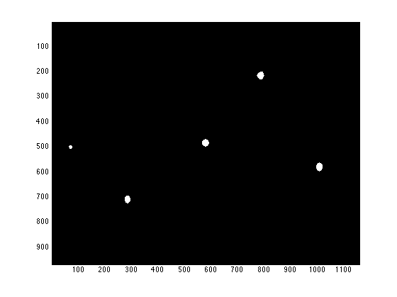
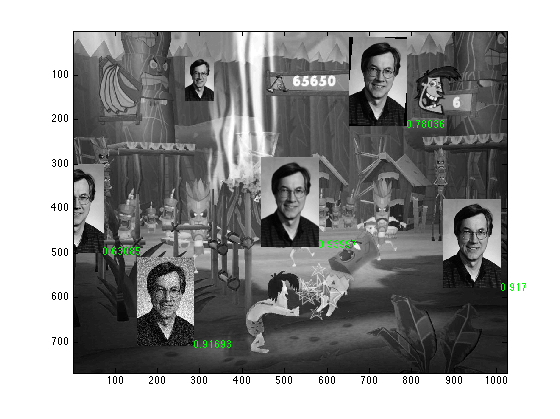

Homework 6 - Find Steve Wilson for Goodness Sake!
Ashutosh Priyadarshy
Digital Image Processing
Spring 2011
Image: "WilsonJungle.png"
close all; clear all; % Read in the jungle and the template of Stevie. jungle = imread('WilsonJungle.png'); stevie = imread('wilson.png'); % Perform a 2D Normalized Cross-Correlation between the template and the % image of the jungle. votes = (normxcorr2(double(stevie), double(jungle))); % Keep anything in from the xcorr that was more than 0.5. winners = votes > 0.5; % Display where these spots are in the image. figure; imagesc(winners); colormap gray; % Encircle areas that say they have Stevie in them. [B, L] = bwboundaries(winners); % Display the original jungle image. figure; imagesc(jungle); colormap gray; % For each area where Stevie was 'found' for k = 1:length(B) % Find the 'center' of that area. boundary = B{k}; x = floor(mean(boundary(:,1))); y = floor(mean(boundary(:,2))); % Get the correlation value at the point. xcorr_val = votes(x, y); % Display the correlation value on the original image. H = text(y,x, num2str(xcorr_val), 'Color', 'g'); end 